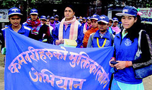

|
|
اورمیلا دختر نپالی؛ برده ای که به فعال حقوق زنان تبدیل شد
يكشنبه8 خرداد 1390
تبدیل شدن زنان ستم دیده به فعالان حقوق زنان و حقوق بشر، پدیده مبارکی است که رو به رشد است. پس از مختاران مای، زن تجاوز دیده پاکستانی، و سمر بدوی، زن ستم دیده عربستانی، اورمیلا چودری از نپال، نیز چنین پدیده ایست که پی به علل و ریشه ای رنج های خود برده و برای تغییر سنن و قوانین زن ستیزانه و غیر انسانی به حرکت در آمده است.
اورمیلا چودری دوست داشت به مدرسه برود و سواد خواندن و نوشتن بیاموزد، اما فرصت و اجازه نیافت و ناچار شد به جای آن تا 18 ساعت در شبانه روز کار کند.
وی در حال حاضر زن 20 ساله ایست که می گوید مجبور بوده فرزندان ارباب خود را به مدرسه برساند، کیف آن ها را حمل کند و با اندوه شاهد آن باشد که چگونه آن ها وارد مدرسه می شوند و خود وی می بایست بیرون دروازه بایستد و نگاهشان کند.
اورمیلا 6 ساله بود که در ازای دریافت تنها 40 دلار به یک خانواده ثروتمند بیگانه فروخته شد. باور کردنی نیست، اما این کار در میان خانواده های فقیر نپال یک سنت است. هزاران دختر نپالی مجبورند به عنوان "کامالاری"، دخترکان برده، کار کنند؛ اگرچه کار بردگان خردسال از 11 سال پیش به این سو در نپال ممنوع است.
دختران در نپال ارزشی ندارند
اورمیلا به کمک ناتالی شوایگر، روزنامه نگار آلمانی، اخیراً کتابی منتشر کرده که چگونگی روند تبدیل وی از یک دخترک برده به فعال سرشناس حقوق دختران پرده بر می دارد. به گفته روزنامه نگار آلمانی، تنها کسی که با این فرهنگ بزرگ شده می داند که چگونه در این فضا می توان حرکت کرد، می تواند حرکتی از پایین در جامعه به وجود آورد. توان اورمیلا و دختران همرزمش، که خود نیز تجربه کار بردگی را دارند، در این مبارزه به راستی باور نکردنی است.
اورمیلا از روستا به خانه اربابش، خانم خانه، در کاتماندو، پایتخت نپال، برده شد. وی مجبور بود که در این خانه اعیانی، از ساعت چهار صبح تا 10 شب کارکند. او باید برای 15 نفر در این خانه آب از محل تقسیم آب آشامیدنی، حمل می کرد. در زمستان تمام انگشتانش بر اثر سرمازدگی درد می کردند. باید با آب سرد ظرف ها را می شست. چهار سال پس از آن تازه توانست به دیدار خانواده اش برود، دیداری بسیار غم انگیز، چرا که مادر خودش حاضر به پذیرش وی نیست.

پروژه نجات دختران
اورمیلا می گوید که در زمان کار بردگی، گاهی که مریض می شد و تب داشت، دلش برای پدر و مادرش به شدت تنگ می شد و دوست داشت کسی او را در آغوش گرفته و تسلا دهد، اما چنین کسی نبود.
اورمیلا دختر خاله و پسر خاله های زیادی دارد، که دو تن از آن ها نیز آلبینو، سپید زالزاد، هستند. وی به خانواده اش گفته بود که دوست ندارد آن ها به سرنوشت وی دچار شوند. بستگانش قول دادند که فرزندان خود را به کار بردگی واندارند، اما خود وی مجبور بود به کاتماندو بازگردد. در آنجا وضعش به شدت وخیم تر می شود و او را به یک زن سیاستمدار معروف می دهند. او، زن جبار دمدمی مزاجی بود و اورمیلا بدون هیچ امکان دفاعی در اختیارش؛ تا آن که از وجود پروژه ای برای حمایت از کالاماری، دخترکان برده، با خبر می شود. اورمیلا از خانه ارباب گریخته و همانند صد ها دختر دیگر در پناه "پلان اینترناشنال" قرار می گیرد.
اعتراض به یک سنت زشت
پس از 10 سال کار بردگی، سر انجام اورمیلای 15 ساله، که بی سواد است، می تواند به مدرسه برود. او که دختر با استعدادی است، پرزیدنت دختران آزاد شده از بردگی در منطقه خود می شود. این دختران به طور دسته جمعی در روستاها سرود خوانده و می کوشند که خانواده ها را قانع کنند تا دخترن شان را نفروشند و گاه با واکنش خصمانه سنت گرایان نیز مواجه می شوند. اورمیلا در مبارزه با سنت زشت فروش دختران تا دیدار با رئیس جمهور نپال نیز پیش رفت و به وجود این رویه اعتراض کرد.
می خواهد وکیل بشود
مهم ترین کاری که اورمیلا انجام می دهد، رجوع او به همراه دختران کالاماری به برده داران و تلاش برای آزادی دختران است. این دختران، پس از آزادی، در یکی از خانه های "پلان" پناه داده می شوند. هر کس که نخواهد به مدرسه برود، می تواند یک دوره کارآموزی داشته باشد. در منطقه مسکونی اورمیلا دیگر دخترک برده وجود ندارد، اما در بخشهای همسایه هنوز کار زیادی در پیش دارد. وی قصد دارد پس از پایان مدرسه در رشته حقوق تحصیل کرده و به وکالت بپردازد. او می خواهد در خدمت کمک به کسانی باشند که به مدرسه و آموزش دسترسی ندارند. اورمیلا و همرزمانش عزم خود را جزم کرده اند تا جامعه نپال را تغییر دهند.
(برگرفته از وبسایت کانال دوم تلویزیون آلمان)